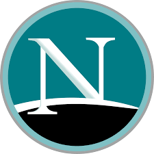

Netscape Communications ou simplesmente Netscape foi uma empresa de serviços de computadores nos EUA, mais conhecida pelo seu navegador web Netscape Navigator. Quando era uma empresa independente, a sua sede foi em Mountain View, Califórnia.

Usar um adaptador de rede no seu PC vai permitir conectar à Internet via Wi-Fi, sem a necessidade de um cabo Ethernet. No Brasil, marcas como D-Link, TP-Link e Intelbras oferecem acessórios do tipo por preços a partir de R$ 40 com conectores USB, o que deve facilitar a instalação mesmo por usuários sem experiência